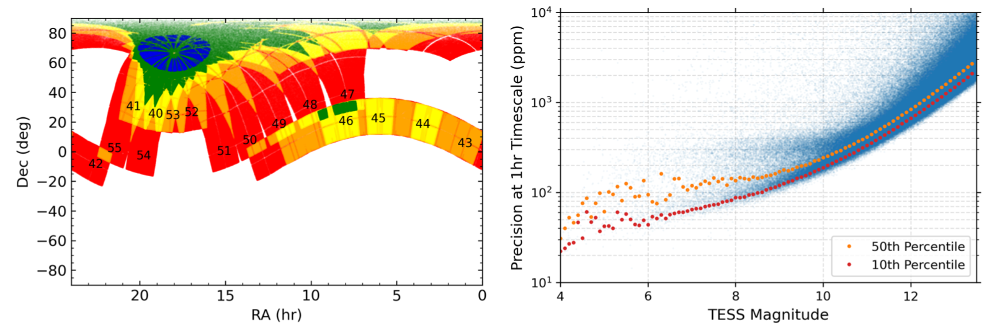
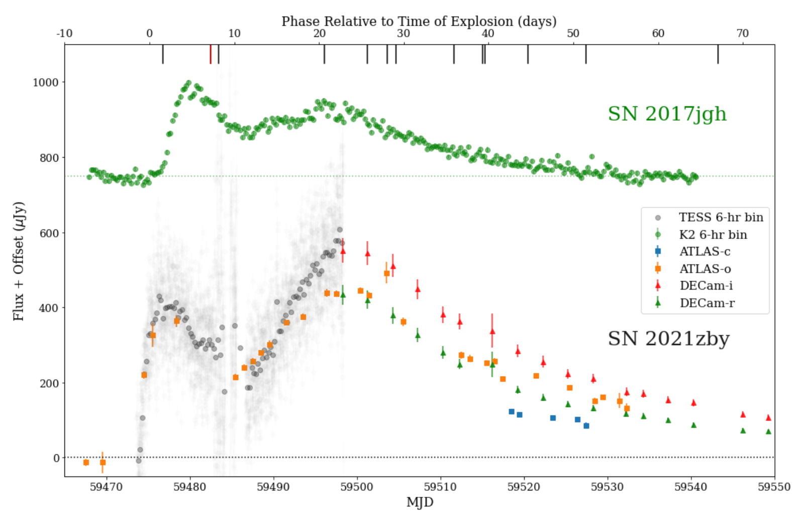
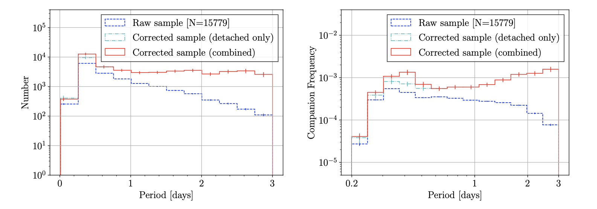

Welcome TESS followers to our latest news bulletin! This week, we are looking at three recent papers from the archive. Enjoy!
Quick-Look Pipeline Light Curves for 5.7 Million Stars Observed Over the Second Year of TESS' First Extended Mission (Kunimoto et al. 2022) :
Thanks to their nearly-complete sky coverage,TESS's Full-Frame Images (FFI) observe millions of stars enabling the discovery of exoplanets, eclipsing binary stars, and the study of stellar variability. During the first extension of the TESS mission (2020 July - September 2022), the scientific potential of the FFIs has further increased as the cadence changed from 30-min to 10-min. Kunimoto et al. (2022) present the second release of Quick-Look Pipeline FFI light curves from the second year of TESS' first extended mission (Sectors 40-55), which covers the northern hemisphere and the ecliptic plane. The authors extracted 12.2 million individual light curves for 5.7 million stars and provide them as high level science products available on MAST. In contrast to their previous light curve release, the target list of Kunimoto et al. (2022) includes stars with T < 15 mag, Teff < 4000 K, and R < 0.8 RSun. The authors report 1-hr photometric precision of the their new light curves of ~2-3 x 10^3 ppm at T = 14 mag, which allows the detection of transiting exoplanets even around faint M-dwarfs where the photometric precision is typically low.
Revealing the progenitor of SN 2021zby through analysis of the TESS shock-cooling light curve (Wang et al. 2022) :
Type IIb supernovae exhibit hydrogen lines during the early phases of the explosion, and are currently most likely attributed to either a star less massive than about 20 MSun in a binary system, or a single star with mass between about 25 MSun and 80 MSun. Occasionally, Type IIb supernovae may produce an early flux excess that occurs before the main maximum, thus exhibiting a double peak in the early light curve. Wang et al. (2022) present a detailed analysis of the spectro-photometric time series of the double-peaked Type IIb supernova SN 2021zby during the first 2 months after explosion. The authors combine long-cadence TESS data from Sectors 42, 43, and 44 with photometry from DECam and ATLAS, and spectroscopy from SSO, IRTF, INT, NTT, LCO, Lick and Liverpool observatories into a multi-band model to fit the data and infer the properties of the progenitor. Wang et al. (2022) argue that the progenitor was likely a red or yellow supergiant with an envelope mass between 0.3 and 3 MSun and radius between about 50 and 350 RSun, in line with other double-peaked Type IIb supernovae. This study highlights the critical part TESS plays in catching the light of supernovae just days after the explosion.
15000 Ellipsoidal Binary Candidates in TESS: Orbital Periods, Binary Fraction, and Tertiary Companions (Green et al. 2022) :
Short-period binary stars are key tracers of stellar evolution as progenitors for supernovae, stellar mergers, cataclysmic variables, etc. In turn, large catalogs of short-period binaries with relatively high sample completeness and well-quantified selection functions are vital for detailed studies of these systems. Green et al. (2022) present a sample of 15,779 candidate binary systems with main-sequence primaries and orbital periods shorter than 5 days, selected according to the presence of tidally-induced ellipsoidal modulations. The authors utilize the TESS ELEANOR pipeline for the Northern hemisphere and the TESS Quick-Look pipeline for the Southern Hemisphere, and the BEER algorithm to analyze the light curves of 4,301,148 targets brighter than T < 13.5 mag. Their spectroscopic follow-up from LCO indicates that the sample purity is 83\pm13\%. Green et al. (2022) find that the frequency of confirmed ellipsoidal companions is 0.0037\pm0.0006, the overall companion frequency for periods shorter than 3 days is 0.01\pm0.002 with a completeness of 28\pm3\%. The authors estimate that 39\pm4\% of their sample are contact binary systems with an orbital period pile-up near 0.4 days, and note a 29\pm5\% frequency of tertiary components for the shortest-period systems. These TESS-enabled results provide an important resource for further studies of short-period detached and contact binary stars.

Fig. 1: Taken from Kunimoto et al. (2022). Sky coverage (left) and photometric precision (right) of the Quick-Look Pipeline TESS light curves for Sectors 40-55. The color coding on the left indicates the number of sectors a targets was observed in (red = 1, orange = 2, yellow = 3, green = 4-10, and blue = 11). The 10th (red) and 50th (orange) percentile in the right panel represent the 1-hr photometric precision binned every 0.1 mag.

Fig. 2: Taken from Wang et al. (2022). Optical photometry of SN 2021zby from TESS (in grey), ATLAS and DECam (as color coded in the legend). TESS started observing about 12 hours before the explosion. The red and black ticks marks along the top axis represent the IRTF spectra. The Kepler light curve of SN 2017jgh is shown in green for comparison.

Fig. 3: Taken from Green et. al. (2022). Orbital period distribution of 15,799 binary stars detected from TESS (linear left panel, logarithmic right panel).